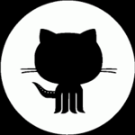

소개(About)
TrendMicro 한국지사근무시 IT전반에 대한 큰 안목을 키우게 되었는데, 기존의 백신 선두업체와 달리 서버와 네트워크 기반으로 바이러스 방역솔루션 시장영역을 개척하고 확장하는 선구적인 기업이었으며, 글로벌 IT 보안 시장 전반적으로 거의 모든 IT 밴더사와 협력관계를 맺고 있었습니다. 저 또한 국내 Major IT 벤더사와 협력관계를 맺으며 안목을 넓힐 수 있었습니다. 이후 (주)하우리에서 국내의 정보보안업체를 글로벌화를 꿈꾸었으나 이루지 못하고, 자회사인 잉카인터넷에서 다시한번 꿈을 이루고자... 후략~
저는 지금도 꿈을 꿉니다. 글로벌 성공기업을 만드는데 일조하겠다는 . . .
경력(Work)
(주)메이자이 [이사] : 2002.10~
원격지원, 정보보안컨설팅, 무선랜 보안개발 등
주식회사에스마이스연구원 [부설연구소 소장] : 2019.06~2020.07
전시회 및 행사 데이터수집, MICE 기획
주식회사 누리랩 [사업개발기획] : 2018.03~2018.10
Email Security Suite, 문서 취약점분석 툴, 디지털포랜식, 정보보안컨설팅
주식회사 지스핀 [사업개발기획 팀장] : 2017.07~2019.06
나노섬유개발, 미세먼지마스크
주식회사잉카인터넷 [대표이사] : 2000.12~2002.08
PC FireWall, Nprotect
(주)하우리 [총괄사업 부장] : 1998.10~2000.12
바이러스 백신
Trend Micro [Acting Country Manager] : 1995.09~1998.10
바이러스백신, 서버용 백신
(주)경신기전 [S/W사업부 과장] : 1993.12~1995.09
Trend Micro 바이러스백신, Novell Neowork LAN 사업
다룰 수 있는 기술(Skills)
- Front-End Development
- HTML5/ CSS3
- Web Standards
- Design
- web Design
- User Interface Design
- Others
- RPA(UiPath)
- Visual studio, VSCode
- Sales & Marketing, Strategic Planning
- SE Sales, Pre Sales, MajorAccount Sales, Mass Media Marketing
- IP(intellectual property) Academy Readers Club, Application and registration of a patent of grade b or higher
- IITP Professional Assessor
학력(Academic)
| 기간 | 학력 |
|---|---|
| 2001.3~2003.2 | 숭실대학교 정보과학대학원 정보산업전공 졸업 [공학석사] |
| 1984.3~1988.2 | 전남대학교 물리학과 졸업 [이학학사] |
| 1984.2~1981.2 | 광주제일고등학교 졸업 |